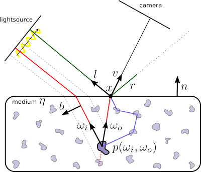
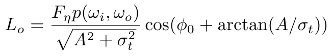
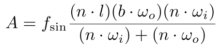
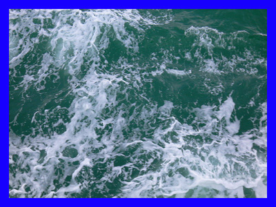
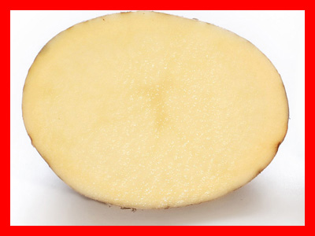
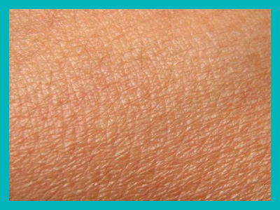
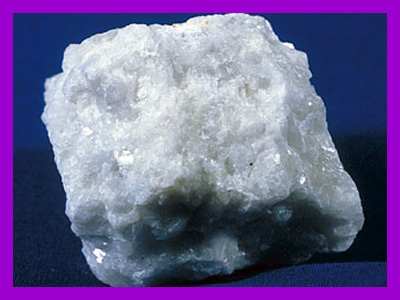
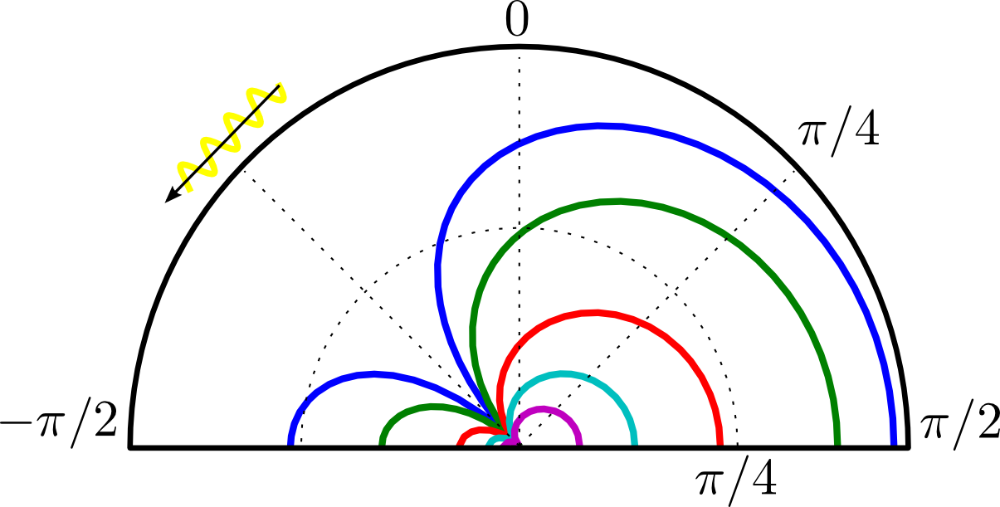
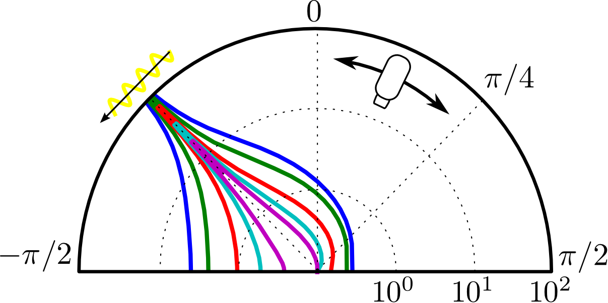
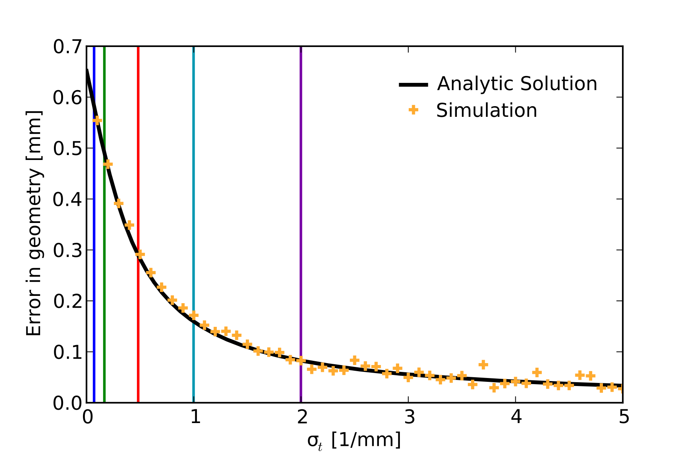

Abstract:
Using optical triangulation methods to measure the shape of translucent objects is difficult because subsurface scattering contaminates measurements of the "direct" reflection at the surface. A number of recent papers have shown that high-frequency sinusoidal illumination patterns allow isolating this direct component, which in turn enables accurate estimation of the shape of translucent objects. Despite these encouraging results, there is currently no rigorous mathematical analysis of the expected error in the measured surface as it relates to the parameters of these systems: the frequency of the projected sinusoid, the geometric configuration of the source and camera, and the optical properties of the target object. We present such an analysis, which confirms earlier empirical results and provides a much needed tool for designing 3D scanners for translucent objects.Documents:

An Analysis of Using High-Frequency Sinusoidal Illumination for Measuring the 3D Shape of Translucent Objects
@article{Holroyd2011,
author = {Michael Holroyd and Jason Lawrence},
title = {An Analysis of Using High-Frequency Sinusoidal Illumination
for Measuring the 3D Shape of Translucent Objects},
journal = {IEEE Conference on Computer Vision and Pattern Recognition},
year = {2011}
}
Results:
Our key analytic result relates the outgoing radiance due to incoming sinusoidal illumination as a function of the camera/light geometry and material properties:


The paper discusses the implications of this formula, and how it related to the accuracy of the recovered geometry:
|  |  |  |  | |
| Sea water, σt = 0.1/mm | Chicken broth, σt = 0.2/mm | Potato, σt = 0.5/mm | Skin, σt = 1.0/mm | Marble, σt = 2.0/mm |


Error in the phase offset (left, radians) and error in the recovered geometry for a structured light setup (right, millimeters), predicted by our analytic model.

Geometric error in a structured light setup as a function of the material's extinction coefficient. We also compare out analytic solution against a simulation using a physically-based volumetric ray-tracer.